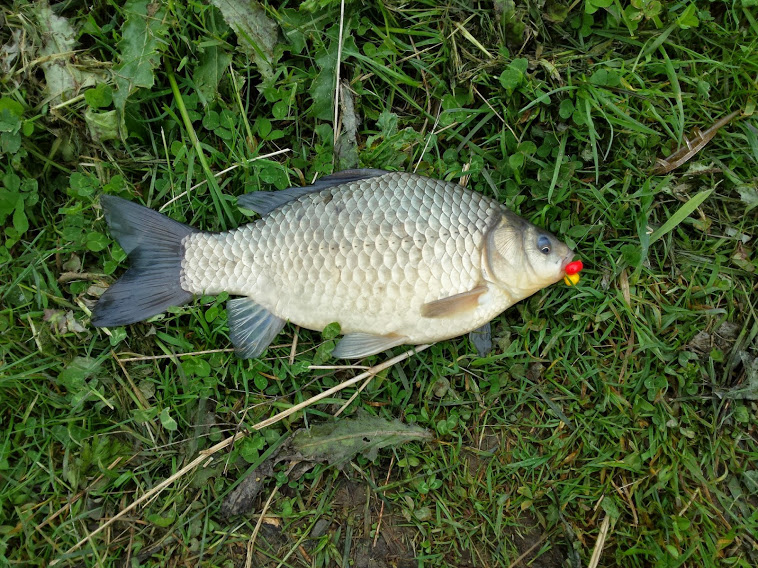

Karaś pospolity (Carassius carassius) to jedna z najczęściej łowionych przez wędkarzy ryb w Polsce. Należy do rodziny karpiowatych. Ma spłaszczone bocznie ciało, bardzo wysokie i krótkie zarazem. Łuski mają złoty połysk. Zęby gardłowe są ustawione w pojedynczym szeregu. Mały pysk nie jest wyposażony w wąsy. W dość wysokiej płetwie grzbietowej ostatni promień jest ząbkowany. Ciało jest brunatno-złociste, ma zielony odcień. Piersiowe i brzuszne płetwy mają przy nasadzie czerwony odcień.
Występowanie i środowisko
Ryba ta żyje w prawie każdym rodzaju zbiorników wodnych. Można ją spotkać zarówno w jeziorach jak i małych, zamulonych stawach, a także w małych i dużych rzekach. Karasie unikają wartkiego nurtu. Preferują płytkie, muliste i ciepłe zbiorniki wody słodkiej. Gatunek ten można spotkać prawie w całej Europie, a u nas na terenie całego kraju.
Tryb życia i zachowanie
Jest bardzo odporny na brak pokarmu i niedobór tlenu. Na zimę potrafi zakopać się głęboko w mule i przeżyć nawet wówczas, gdy mróz skuje wodę do samego dna. Ryba ta rośnie wolno.
Pożywienie
Podstawę pokarmu stanowi fauna denna i roślinność wodna.
Rozmnażanie
Okres rozrodu przypada na miesiące od maja do lipca. W tym okresie samica składa ikrę kilka razy. Jajeczka przyklejają się do wodnych roślin. Po kilku dniach z jajeczek wylęga się narybek, który potrafi przyssać się do wodnych roślin.
Ciekawostki
Mimo, że ryba ta ma dość smaczne mięso i jest często odławiana przez wędkarzy, nie ma dużego znaczenia gospodarczego. Przyczyną tego stanu rzeczy jest jej bardzo powolny wzrost.
Okres ochronny: nie ma
Wymiar ochronny: nie ma
Dobowy limit połowu: nie ma
Rekord Polski: 4,2 kg 53 cm